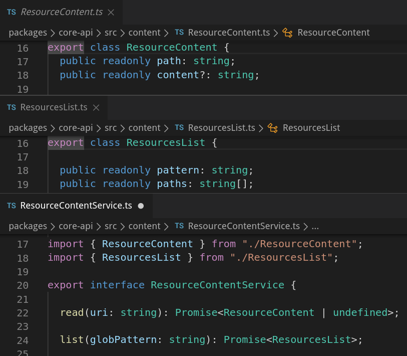
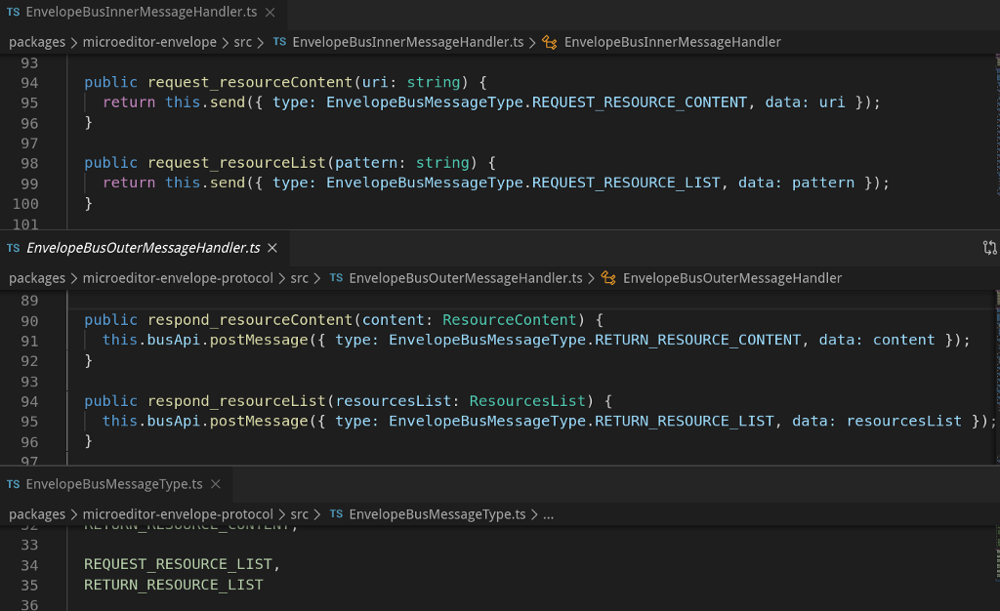
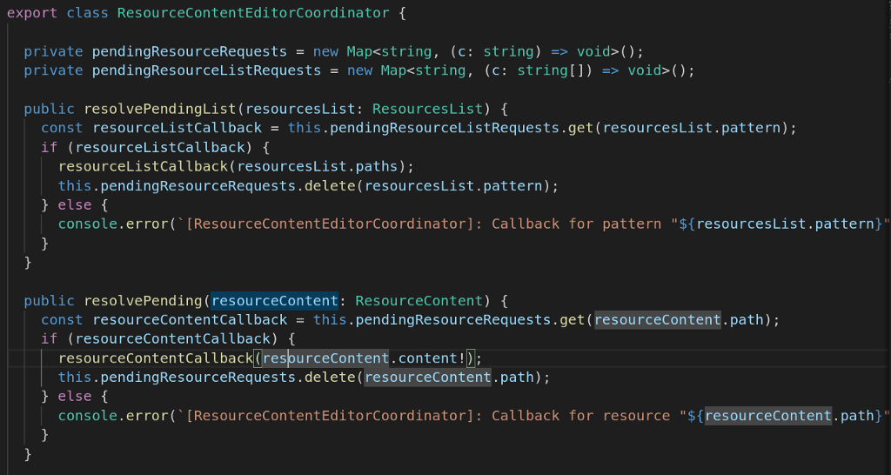
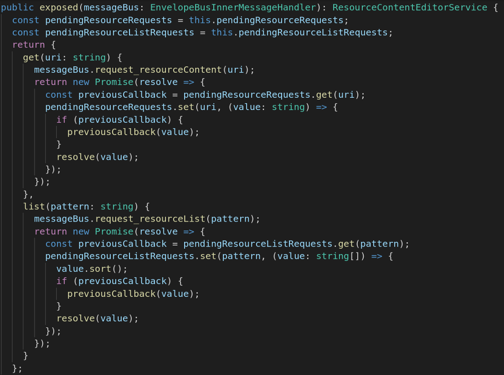
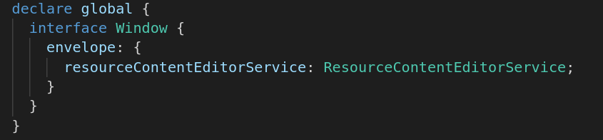
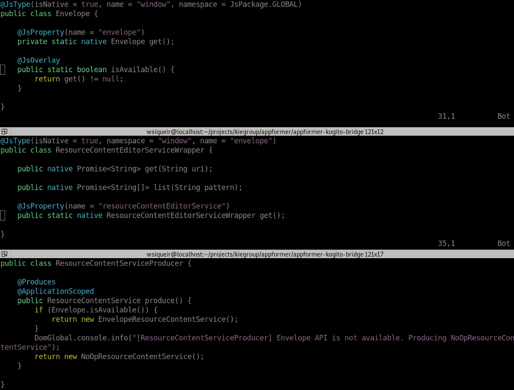

Reading resources with the new Resource Content API
Kogito Tooling Resource Content API

Editors can now fetch contents of files by accessing the object window.envelope.resourceContentEditorService and calling methods get(uri) to retrieve a resource content and list(glob pattern) to list available resources URIs. GWT editors projects can make use of Resource Content by adding the dependency org.appformer:appformer-kogito-bridge to their projects, inheriting org.appformer.kogito.bridge.AppformerKogitoBridge in *.gwt.xml files, and then injecting org.appformer.kogito.bridge.client.resource.ResourceContentService in their beans.
In this article we will discuss the challenges to create such API and show how it can be used.
Definition
The Resource Content API is defined as follows:
A common need across different Channels(VSCode/Chrome/Online) is the ability to get access to other files, an example of this need is the DMN Editor that imports another DMN model. Another example is a Runtime Process Admin UI that needs access to the Process Definition (the content of a BPMN file).
The role of the Resource Content API is to provide a mechanism that works across different channels to provide the contents of other files.
Resource Content API Design
We defined the API name as Resource Content and the first challenge is to define it. Currently we have editors that can run on VSCode and as a Chrome Extension, it is what we call Channel, but this list will grow.
During the API functionalities definition we discussed how to handle authentication and if the API would allow modify contents. For a first version we identified that list and get resources would be enough functionalities. Translating to code we have a ResourceContentService interface with methods get, which receives the resource path and returns a ResourceContent object, and list, which accepts a query String which follows glob pattern and returns a ResourcesList object.

The classes used by ResourceContentService contains the actual result and also what lead to that result. ResourceContent has the path and the text content of a resource and ResourcesList contains the pattern used for searching and the list of resource paths that matches the pattern.
The API itself is not useful, as we need to integrate it with the Envelope API to make it possible to use.
Envelope API integration
In Kogito Tooling the Envelope API is what guarantees that the same editor can run across multiple channels. It is a wrapper that provides all the necessary abstraction to make any content portable across different channels without directly exposing any channel specifics to the content itself. Reference.
It is implemented abstracting a messaging system that can use, for example, the browser window to exchange messages with the channel where it is running. Inside the editor container, messages are handled using EnvelopeBusInnerMessageHandler and in the channel, messages are handled using EnvelopeBusOuterMessageHandler. Each message has a type and the messages are exchanged using methods in each handler. For example, the outer handler can request the editor content, and the inner handler should respond to this request sending a response message with the correct type and content.
Having this said, to integrate the resource content API we must:
- Create new message types and the methods to allow exchanging them;
- Have a mechanism to correctly respond the resources content API requests.
To achieve the first item we simple extended the API functionalities in handlers and added new message types.

The solution that requested more of our attention was creating a way to avoid resource content and resource list requests to get missed. For this mission we created the ResourceContentEditorCoordinator, where the requests are stored in a map along with its callback (basically complete the initial Promise) and once we have the response we retrieve the request from the map and complete the promise. If other requests for the same content or list with the same pattern were made before then we call the previous stored callback in a chain until all promises are fulfilled.

The coordinator also creates ResourceContentEditorService instances, an interface used to expose the resource content functionalities for editors.
Exposing the Resource Content API functionalities
So far our API is not visible to editors, it lies only inside the Envelope API. To expose the API we created a new interface ResourceContentEditorService, which have the same methods as ResourceContentService, but what we see in this interface is what the editors will see as well, so in the future we may want to have methods that makes sense only in one of the sides of the Envelope API. To create instances of this interface we use the ResourceContentEditorCoordinator exposed method, because it creates instances that will not wrongly respond for requests, hence why this method needs a reference to the messageBus used by the editor.


Finally editors can use the window.envelope.resourceContentEditorService object to request resources.
Currently in Kogito Tooling we have two existing editors: one for BPMN files and the other for DMN. Business Central has many other stable editors and they were built using GWT, which uses Java. To make easy for existing editors use the resource content API we created a Java project to allow editors to use our API . We used JSInterop, the bridge from Java to Javascript and Errai, which brings CDI to client side GWT. With it we can produce instances of ResourceContentService that will change depending on whether the window.envelope.resourceContentEditorService is available or not.

Finally GWT Editors can use the resource content API by simple adding the dependency org.appformer:appformer-kogito-bridge to their projects, inheriting org.appformer.kogito.bridge.AppformerKogitoBridge in *.gwt.xml files, and then injecting org.appformer.kogito.bridge.client.resource.ResourceContentService in their beans.
Notice that until here we didn’t discuss how resources are actually retrieved and how the files are listed.
ResourceContentService implementations
Right now Kogito Tooling is supported on VSCode and as a Chrome Extension. Each channel uses different API to deal with resources. Let’s briefly cover the main aspects of each channel:
- VSCode: Since the Microsoft IDE has a good API to retrieve resources we simply had to delegate the calls to it. See VsCodeResourceContentService on GitHub for more information.
- GitHub Chrome Extension: To access GitHub we use Octokit. The extension is activated in two different pages in GitHub: pull request reviews and editing a BPMN file. For each case the information we retrieve for use with the octokit API needs to be updated, hence we change the chrome resource content API instance according to the information user is editing or viewing.
Next Steps for the Resource Content API
The next steps for the resource content API is implementing it as new channels are supported and add new functionalities according to editors requirements.
Reading resources with the new Resource Content API was originally published in kie-tooling on Medium, where people are continuing the conversation by highlighting and responding to this story.